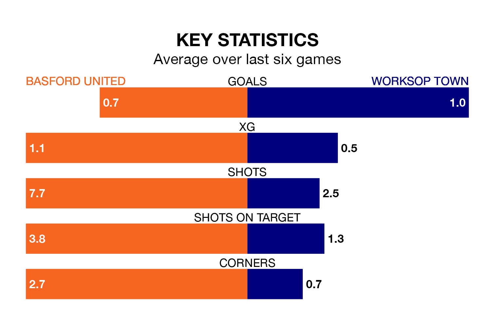

Worksop Town are strong favourites to take all three points despite Basford United's home advantage in Monday's match at Greenwich Avenue.
*Betting Company* are offering odds of 1.45 on Worksop sealing the win, with the visitors sitting sixth in the Northern Premier League table.
Basford, who are 18th in the league and 32 points behind Worksop, are priced at 5.25 to win. A draw is set at 4.2.
With 34 goals in 36 games so far this season, Basford are the league's joint-third-lowest scorers with 0.9 goals per game. And they are conceding at an average rate, letting in 59 goals at a rate of 1.6 per game.
Worksop, meanwhile, are above average scorers, with 1.8 goals per game, compared to a league average of 1.6. They have conceded 1.1 goals per game.
United are in mixed form in the Northern Premier League, with two wins and a draw from their last six games.
With three wins and a draw over that period, Town's form is better – they have taken 10 points from 18, compared to the hosts' seven.
Basford's last match was on Saturday, a 2-1 win against Atherton Collieries.
Worksop beat Hyde United 1-0 last time out, also on Saturday.
Updated: 10:31 (UTC), 31/03/24